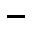
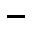
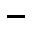

StA München, Saline Rosenheim, 1325 



Kommentar
StA München, Saline Rosenheim 1325
Aufzeichnungen über Wetterbeobachtungen (Titelblatt)1896 ((Rosenheim))
Aufzeichnungen über Wetterbeobachtungen (Titelblatt)1896 ((Rosenheim))
Archivaliengattung: Akt
Schwierigkeitsgrad: leicht
Schreiberhände:
- (S1)
Auf der ersten Seite des Heftes, das Aufzeichnungen über tägliche Wetterbeobachtungen in Rosenheim vom 1. Januar 1896 bis zum 30. Juni 1899 enthält, werden die erhobenen Daten, Maßeinheiten und Symbole erklärt.
Die Erläuterungen sind in Kurrentschrift geschrieben, als Auszeichnungsschrift für die Überschriften (Z. 1, 2 und 23) wird lateinische Schreibschrift verwendet.
Umlaute werden nur bei Kurrent-Kleinbuchstaben mit zwei Punkten über dem Vokal wiedergegeben, am Beginn großgeschriebener Worte sowie in der lateinischen Schreibschrift dagegen durch ein nachgestelltes e (Z. 20, 21: Aeste, Z. 23: Zeichenerklaerung).
Die Symbole für die verschiedenen Wetterphänomene werden in Entzifferung und Transkription nicht berücksichtigt.
Die Erläuterungen sind in Kurrentschrift geschrieben, als Auszeichnungsschrift für die Überschriften (Z. 1, 2 und 23) wird lateinische Schreibschrift verwendet.
Umlaute werden nur bei Kurrent-Kleinbuchstaben mit zwei Punkten über dem Vokal wiedergegeben, am Beginn großgeschriebener Worte sowie in der lateinischen Schreibschrift dagegen durch ein nachgestelltes e (Z. 20, 21: Aeste, Z. 23: Zeichenerklaerung).
Die Symbole für die verschiedenen Wetterphänomene werden in Entzifferung und Transkription nicht berücksichtigt.
Entzifferung
(Absatz Beginn)
1 Wetterbeobachtungen(Wechsel des Schriftsystems)
2 im Jahre 1896.(Wechsel des Schriftsystems)
3 Bemerkungen: Die Temperaturangabe ist das Mittel aus zwei
4 am Maximum = u(nd) Minimum Thermometer Morgens u(nd) Abends 8 Uhr
5 genom(m)enen Ablesungen.
6 Die Barometerangabe beruht aufa) dem Mittel der 4b) am Morgen, Mit-
7 tagMitternacht(Über der Zeile nachgetragener Text)u(nd) Abend genom(m)enen Ablesungen am selbstregistrirenden Ba-
8 rometer.
9 Niederschlagsmenge ist in Millimetern angegeben.
10 2 Windbeobachtungen an einem Tage sind durch Bruchstriche getren(n)t.
11 Die Bewölkung wird in Graden eingetheilt. 10° vollständige Be-
12 wölkung, 0° ganz blauer Him(m)el, 5° der halbe Him(m)el bewölkt.
13 Der Windexponent bezeichnet folgende Stärkegrade:
| 14 Stärke 15 Grad | Bezeichnungin Worten | Wirkung des Windes. |
| 16 0 | Windstille | Rauch fast gerade emporsteigend, kein Blättchen bewegt sich. |
| 17 2 | Schwach | Für das Gefühl bemerkbar, bewegt Wimpel u(nd) leichte Blätter. |
| 18 4 | Mässig | Streckt Wimpel, bewegt Blätter u(nd) kleinere Zweige. |
| 19 6 | Frisch | Bewegt größere Zweige. |
| 20 8 | Stark | “ ganze Aeste u(nd) schwächere Stäm(m)e, hem(m)t das Gehen. |
| 21 10 | Sturm | Rüttelt ganze Bäume, bricht Aeste u(nd) mäßige Bäume. |
| 22 12 | Orkan | Deckt Häuser ab, wirft Schornsteine um, bricht u(nd) entwurzelt große Bäume. |
23 Zeichenerklaerung.(Wechsel des Schriftsystems)
| 24 Regen | Nebel | Gewitter | Mondring | Höhenrauch |
| 25 Schnee | Thau | Wetterleuchten | Mondhof | stark(er) Wind |
| 26 Hagel | Reif | Son(n)enring | Regenbogen | Rauhfrost |
| 27 Graupeln | Schneegestöber | Son(n)enhof | Glatteis | Nordlicht |
(Absatz Ende)
a) "auf"(Textzitat) gebessert aus "aus"(Textzitat)
b) "4"(Textzitat) gebessert aus "3"(Textzitat)
Transkription
(Absatz Beginn)
1 Wetterbeobachtungen(Wechsel des Schriftsystems)
2 im Jahre 1896.(Wechsel des Schriftsystems)
3 Bemerkungen: Die Temperaturangabe ist das Mittel aus zwei
4 am Maximum- und Minimumthermometer morgens und abends 8 Uhr
5 genommenen Ablesungen.
6 Die Barometerangabe beruht aufa)dem Mittel der 4b) am Morgen, Mit-
7 tag, Mitternachtc) und Abend genommenen Ablesungen am selbstregistrirenden Ba-
8 rometer.
9 Niederschlagsmenge ist in Millimetern angegeben.
10 2 Windbeobachtungen an einem Tage sind durch Bruchstriche getrennt.
11 Die Bewölkung wird in Graden eingetheilt: 10° vollständige Be-
12 wölkung, 0° ganz blauer Himmel, 5° der halbe Himmel bewölkt.
13 Der Windexponent bezeichnet folgende Stärkegrade:
| 14 Stärke 15 Grad | Bezeichnungin Worten | Wirkung des Windes. |
| 16 0 | Windstille | Rauch fast gerade emporsteigend, kein Blättchen bewegt sich. |
| 17 2 | Schwach | Für das Gefühl bemerkbar, bewegt Wimpel und leichte Blätter. |
| 18 4 | Mässig | Streckt Wimpel, bewegt Blätter und kleinere Zweige. |
| 19 6 | Frisch | Bewegt größere Zweige. |
| 20 8 | Stark | “ ganze Aeste und schwächere Stämme, hemmt das Gehen. |
| 21 10 | Sturm | Rüttelt ganze Bäume, bricht Aeste und mäßige Bäume. |
| 22 12 | Orkan | Deckt Häuser ab, wirft Schornsteine um, bricht und entwurzelt große Bäume. |
23 Zeichenerklaerung.(Wechsel des Schriftsystems)
| 24 Regen | Nebel | Gewitter | Mondring | Höhenrauch |
| 25 Schnee | Thau | Wetterleuchten | Mondhof | starker Wind |
| 26 Hagel | Reif | Sonnenring | Regenbogen | Rauhfrost |
| 27 Graupeln | Schneegestöber | Sonnenhof | Glatteis | Nordlicht |
(Absatz Ende)
a) "auf"(Textzitat) gebessert aus "aus"(Textzitat)
b) "4"(Textzitat) gebessert aus "3"(Textzitat)
c) "Mitternacht"(Textzitat) über der Zeile nachgetragen